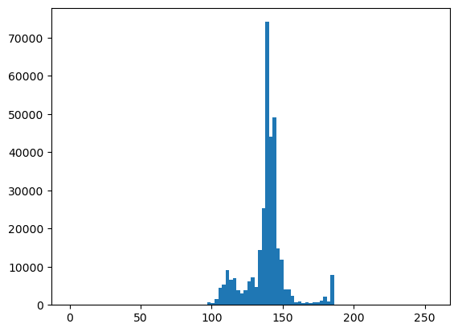
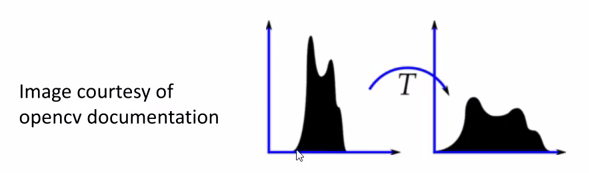
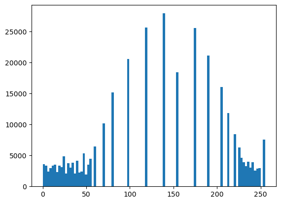
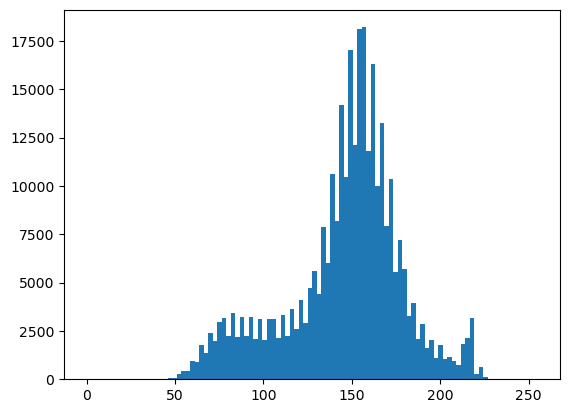
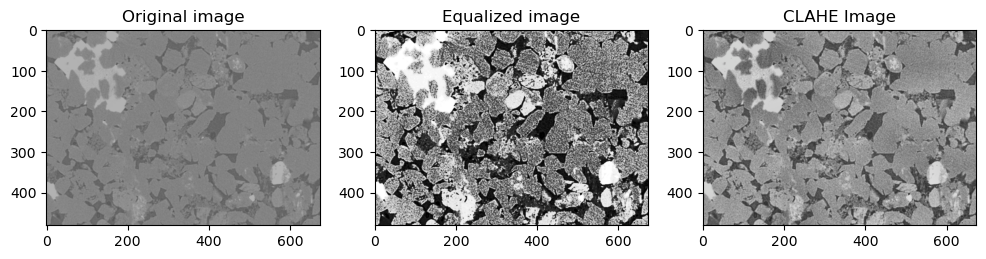
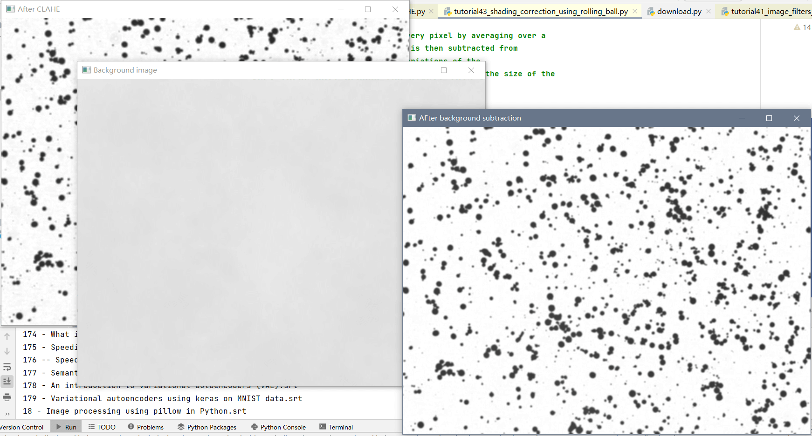

DIP-Introductory python tutorials for image processing(42-43)-CLAHE
目录
- Tutorial 42 - Histogram equalization and contrast limited adaptive histogram equalization -CLAHE-
- Tutorial 43 - Shading correction using rolling ball background subtraction
Tutorial 42 - Histogram equalization and contrast limited adaptive histogram equalization -CLAHE-
|
-
- Return a copy of the array collapsed into one dimension.
- 返回折叠成一维的数组的副本
- Return a copy of the array collapsed into one dimension.
绘制直方图
|
(array([ 0., 0., 0., 0., 0., 0., 0., 0.,
0., 0., 0., 0., 0., 0., 0., 0.,
0., 0., 0., 0., 0., 0., 0., 0.,
0., 0., 0., 0., 0., 0., 0., 0.,
0., 0., 0., 0., 0., 0., 673., 450.,
1451., 4419., 5375., 9157., 6488., 6910., 3772., 3025.,
3818., 6242., 7224., 4729., 14421., 25340., 74157., 44002.,
49095., 14752., 11771., 3968., 4044., 2290., 627., 960.,
529., 722., 384., 667., 612., 1083., 2254., 869.,
7914., 0., 0., 0., 0., 0., 0., 0.,
0., 0., 0., 0., 0., 0., 0., 0.,
0., 0., 0., 0., 0., 0., 0., 0.,
0., 0., 0., 0.]),
array([ 0. , 2.55, 5.1 , 7.65, 10.2 , 12.75, 15.3 , 17.85,
20.4 , 22.95, 25.5 , 28.05, 30.6 , 33.15, 35.7 , 38.25,
40.8 , 43.35, 45.9 , 48.45, 51. , 53.55, 56.1 , 58.65,
61.2 , 63.75, 66.3 , 68.85, 71.4 , 73.95, 76.5 , 79.05,
81.6 , 84.15, 86.7 , 89.25, 91.8 , 94.35, 96.9 , 99.45,
102. , 104.55, 107.1 , 109.65, 112.2 , 114.75, 117.3 , 119.85,
122.4 , 124.95, 127.5 , 130.05, 132.6 , 135.15, 137.7 , 140.25,
142.8 , 145.35, 147.9 , 150.45, 153. , 155.55, 158.1 , 160.65,
163.2 , 165.75, 168.3 , 170.85, 173.4 , 175.95, 178.5 , 181.05,
183.6 , 186.15, 188.7 , 191.25, 193.8 , 196.35, 198.9 , 201.45,
204. , 206.55, 209.1 , 211.65, 214.2 , 216.75, 219.3 , 221.85,
224.4 , 226.95, 229.5 , 232.05, 234.6 , 237.15, 239.7 , 242.25,
244.8 , 247.35, 249.9 , 252.45, 255. ]),
<BarContainer object of 100 artists>)

- Apply histogram equalization to the L channel
Histogram equalization 直方图均衡化
- Histogram equalization enhances the contrast of an image by spreading the pixel histogram value.
- 直方图均衡化通过扩展像素直方图值来增强图像的对比度。

- Histogram equalization can lead to too bright or dark regions as the contrast is not limited.
- 直方图均衡化会导致对比不受限制的区域过于明亮或黑暗。
|
|
(array([ 3620., 3373., 2415., 2960., 3320., 3508., 2329., 3384.,
3104., 4863., 2047., 3772., 3025., 3818., 2083., 4159.,
2247., 2386., 5356., 1964., 3496., 4454., 0., 6471.,
0., 0., 0., 10157., 0., 0., 0., 15183.,
0., 0., 0., 0., 0., 0., 20592., 0.,
0., 0., 0., 0., 0., 0., 25633., 0.,
0., 0., 0., 0., 0., 0., 27932., 0.,
0., 0., 0., 0., 18417., 0., 0., 0.,
0., 0., 0., 0., 25585., 0., 0., 0.,
0., 0., 21147., 0., 0., 0., 0., 0.,
16077., 0., 0., 11871., 0., 0., 8441., 0.,
6311., 4639., 3890., 3242., 3968., 3019., 3942., 2595.,
2882., 2949., 0., 7568.]),
array([ 0. , 2.55, 5.1 , 7.65, 10.2 , 12.75, 15.3 , 17.85,
20.4 , 22.95, 25.5 , 28.05, 30.6 , 33.15, 35.7 , 38.25,
40.8 , 43.35, 45.9 , 48.45, 51. , 53.55, 56.1 , 58.65,
61.2 , 63.75, 66.3 , 68.85, 71.4 , 73.95, 76.5 , 79.05,
81.6 , 84.15, 86.7 , 89.25, 91.8 , 94.35, 96.9 , 99.45,
102. , 104.55, 107.1 , 109.65, 112.2 , 114.75, 117.3 , 119.85,
122.4 , 124.95, 127.5 , 130.05, 132.6 , 135.15, 137.7 , 140.25,
142.8 , 145.35, 147.9 , 150.45, 153. , 155.55, 158.1 , 160.65,
163.2 , 165.75, 168.3 , 170.85, 173.4 , 175.95, 178.5 , 181.05,
183.6 , 186.15, 188.7 , 191.25, 193.8 , 196.35, 198.9 , 201.45,
204. , 206.55, 209.1 , 211.65, 214.2 , 216.75, 219.3 , 221.85,
224.4 , 226.95, 229.5 , 232.05, 234.6 , 237.15, 239.7 , 242.25,
244.8 , 247.35, 249.9 , 252.45, 255. ]),
<BarContainer object of 100 artists>)

- Combine the Hist. equalized L-channel back with A and B channels
|
- Convert LAB image back to color (RGB)
|
CLAHE
- Image Enhancement - CLAHE - 知乎
- Contrast Limited Adaptive Histogram Equalization (CLAHE) 对比度受限自适应直方图均衡化(CLAHE)
- Adaptive histogram equalization divides image into small blocks ($8\times8$ tiles default in opencv).
- 自适应直方图均衡将图像划分为小块($8\times8$ tiles在 opencv 默认)。
- Each block is histogram equalized.
- 每个块都是直方图均衡化。
- To minimize noise amplification, contrast limiting is applied (default 40 in opencv)
- 为了最小化噪声放大，应用了对比度限制(opencv中默认为40)
- Adaptive histogram equalization divides image into small blocks ($8\times8$ tiles default in opencv).
|
|
(array([ 0., 0., 0., 0., 0., 0., 0., 0.,
0., 0., 0., 0., 0., 0., 0., 0.,
0., 0., 80., 70., 261., 438., 435., 967.,
918., 1781., 1373., 2373., 1964., 2956., 3179., 2223.,
3424., 2212., 3209., 2219., 3232., 2075., 3101., 2047.,
3108., 3122., 2148., 3320., 2242., 3618., 2594., 4079.,
2903., 4743., 5575., 4406., 7857., 5992., 10625., 8206.,
14198., 10454., 17020., 12111., 18115., 18205., 11821., 16331.,
10015., 13274., 7932., 10369., 5565., 7210., 5721., 3289.,
3961., 2062., 2873., 1624., 2026., 1120., 1771., 1049.,
1131., 950., 756., 1819., 2148., 3186., 263., 652.,
98., 0., 0., 0., 0., 0., 0., 0.,
0., 0., 0., 0.]),
array([ 0. , 2.55, 5.1 , 7.65, 10.2 , 12.75, 15.3 , 17.85,
20.4 , 22.95, 25.5 , 28.05, 30.6 , 33.15, 35.7 , 38.25,
40.8 , 43.35, 45.9 , 48.45, 51. , 53.55, 56.1 , 58.65,
61.2 , 63.75, 66.3 , 68.85, 71.4 , 73.95, 76.5 , 79.05,
81.6 , 84.15, 86.7 , 89.25, 91.8 , 94.35, 96.9 , 99.45,
102. , 104.55, 107.1 , 109.65, 112.2 , 114.75, 117.3 , 119.85,
122.4 , 124.95, 127.5 , 130.05, 132.6 , 135.15, 137.7 , 140.25,
142.8 , 145.35, 147.9 , 150.45, 153. , 155.55, 158.1 , 160.65,
163.2 , 165.75, 168.3 , 170.85, 173.4 , 175.95, 178.5 , 181.05,
183.6 , 186.15, 188.7 , 191.25, 193.8 , 196.35, 198.9 , 201.45,
204. , 206.55, 209.1 , 211.65, 214.2 , 216.75, 219.3 , 221.85,
224.4 , 226.95, 229.5 , 232.05, 234.6 , 237.15, 239.7 , 242.25,
244.8 , 247.35, 249.9 , 252.45, 255. ]),
<BarContainer object of 100 artists>)

|
|
|

Tutorial 43 - Shading correction using rolling ball background subtraction
Rolling Ball Background Subtraction - ImageJ
This plugin tries to correct for uneven illuminated background by using a “rolling ball” algorithm.
A local background value is determined for every pixel by averaging over a very large ball around the pixel. This value is hereafter subtracted from the original image, hopefully removing large spatial variations of the background intensities. The radius should be set to at least the size of the largest object that is not part of the background.
This plugin implements (differently) the same algorithm as the one built-in ImageJ in the Process › Subtract background menu, but adds a useful Preview capability. Also, to display the background subtracted in a separate (new) window, hold the ALT key when pressing “OK” (Preview must be off).
The rolling-ball algorithm was inspired by Stanley Sternberg’s article, “Biomedical Image Processing”, IEEE Computer, January 1983.这个插件试图通过使用“滚动球”算法来纠正不均匀的照明背景。
局部背景值是通过在像素周围的一个非常大的球上取平均值来确定的。
这个值以后从原始图像中减去，希望去除大的空间变化的背景强度。
半径应该至少设置为不属于背景的最大物体的大小。
这个插件实现了与Process›Subtract背景菜单中内置的ImageJ相同的算法(不同)，但是增加了一个有用的预览功能。
此外，要在一个单独的(新)窗口中显示减去的背景，按住ALT键时按“OK”(预览必须关闭)。
滚动球算法的灵感来自Stanley Sternberg的文章，“生物医学图像处理”，发表于IEEE计算机，1983年1月。
Popular imageJ plugin for background subtraction.
- 流行的imageJ插件，用于背景减法。
Only works on 8 bit grey images.
- 只适用于8位灰色图像。
“Imagine that the 2D grayscale image has a third (height) dimension by the image value at every point in the image, creating a surface.A ball of given radius is rolled over the bottom side of this surface;the hull of the volume reachable by the ball is the background.”
- 假设2D灰度图像有第三维度(高度)，即图像中每一点的图像值，从而创建一个曲面。
一个给定半径的球滚过这个表面的底边;球所能到达的体积的船体是背景
- 假设2D灰度图像有第三维度(高度)，即图像中每一点的图像值，从而创建一个曲面。
A great algorithm for particle detection type applications.
- 一个伟大的算法用于粒子检测类型的应用。
1st approach: Perform CLAHE
Equalize light by performing CLAHE on the Luminance channel
- 通过在亮度通道上执行 CLAHE 来平衡光线
The equalize part alreay covered as aprt of previous tutorials about CLAHE
- 均衡部分已经在以前关于 CLAHE 的教程中介绍过了
This kind of works but you can still see shading after the correction.
- 这类作品，但你仍然可以看到阴影校正后。
|

2nd approach:
Apply rolling ball background subtraction
- 应用滚动球背景减法
pip install opencv-rolling-ball
|
Collecting opencv-rolling-ball
Downloading opencv-rolling-ball-1.0.1.tar.gz (6.2 kB)
Preparing metadata (setup.py): started
Preparing metadata (setup.py): finished with status 'done'
Requirement already satisfied: opencv-python in c:\users\gzjzx\anaconda3\lib\site-packages (from opencv-rolling-ball) (4.6.0.66)
Requirement already satisfied: numpy in c:\users\gzjzx\anaconda3\lib\site-packages (from opencv-rolling-ball) (1.23.1)
Building wheels for collected packages: opencv-rolling-ball
Building wheel for opencv-rolling-ball (setup.py): started
Building wheel for opencv-rolling-ball (setup.py): finished with status 'done'
Created wheel for opencv-rolling-ball: filename=opencv_rolling_ball-1.0.1-py3-none-any.whl size=6877 sha256=635254917753eb044afaf6cc9ce2f9bd5205081c9a5daa8c1101cb525d73a669
Stored in directory: c:\users\gzjzx\appdata\local\pip\cache\wheels\b6\cf\88\7ebc10f8425fbc46777a6e6a3d6964d35277134981ca85757b
Successfully built opencv-rolling-ball
Installing collected packages: opencv-rolling-ball
Successfully installed opencv-rolling-ball-1.0.1
Note: you may need to restart the kernel to use updated packages.
|
